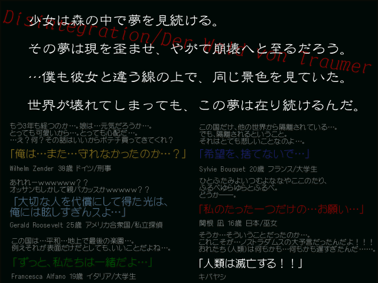

| No,010 【Disintegration/Der Wald von Traumer】 |
| ダウンロード（4.79MB） |
 |
| 【ＨＮ】 某半島人 【コメント】 読むゲ(Made in Korea)
時間を無駄にしてもいい人向け 時間の無駄だったと損害賠償を要求しないようにしてください 以下落書き Episode:0 ~Bayt al-Maqdis~
崩壊した壁、昔の戦いの傷跡。
原型をかろうじて留めている城壁の一部分。 思い出がたくさん詰まった場所も、もう見る影も無い。 全てを奪われた。負けたものの定め。 今こうして命あることが、苦痛に思える。 壁に手を触れる。私のぬくもりを全て奪ってしまいそうなくらいに冷たい壁。
瑣末な思い出も、全て覚えてる。 楽しかった思い出も、辛かった思い出も、捨ててしまいたかった。 でも今の私を支えているのは、その思い出なんだ。
その思い出を夢として、私は見続ける。 夢が、現になることを信じて。 夢の森。
淡く儚い夢を、永遠とする。 そんな場所があるんだってさ…。 行ってみたいなぁ…。
そんな…、それこそ夢みたいな…森に…。 光の届かない、真冬の廃墟の片隅にたった毛布一枚で膝を抱えて丸くなる。
瞳を閉じて、ただ一つだけ願うんだ。 「いい夢が、見れますように…」
甘い恋物語を演じる。
役者は、私と、君。 客は夜空の星々。 夢だって分かっていても。
貴方のぬくもりを感じていたい。 今夜だけの付き合いだけど、ずっと傍に居て。見つめていて。
手を離さなければ、大丈夫。 世界が崩れても、壊れても。
私たちは一緒に居られるから。 「…俺歴史とか興味ないんだけどなぁ」
旧友から、旅行に行こうといきなり誘われた。
たまには、骨休めも悪くないと思ってOKしてしまったが、行き先は海外。遺跡探索ツアーらしい。 正直そんなことやってる暇はないんだ。でも、強引な性格は相変わらずだった。 「ここには凄い歴史が眠ってるんですよ＾＠＾ノシ
財宝とかもあるかもしれませんよ＾＠＾ノシ」 鼻息荒くまくしたてる旧友にため息を一つ吐き、よっこいしょと近くの岩に座る。
「ねぇよ…ここ観光地化してんだろ？常識的に考えろよ…」
「やる気無いですね；＾＠＾ノシ」
旧友はガスマスクを被っていた。表情までは良く分からない。人は変わるものなんだな…。
シュコーシュコーという呼吸音が辺りに響き渡って非常に耳障りである。 っていうかそれ外せよ。 「くそっ、こんなつまらない文化遺産、落書きしてやる」
「やめてください；＾＠＾ノシ」
転がっている石を拾おうとして、ふと風を感じた。
隙間風のような、別の空間から流れてくるこことは違う種類の風。 蹲って、地面を調べてみる。この下に、空洞がある…？ 「隠し階段ですか？＾＠＾ノシ」
「ああ、でもどうやって開ければいいのか、分からない」
「我が拳は、海を裂き、地面を割る！＾＠＾ノシ」
旧友の拳が厚い石畳を叩き割り、地下へと続く階段が現れた。
これはないだろ、常識的に考えて…。 「フィクションですから＾＠＾ノシ」
「それ以上の暴虐は命に関わるぞ」
旧友は都合の良いことに懐中電灯まで用意していた。
2人で気をつけながら階段を降りる。 光の届かない地下の部屋で。見つけたものは。 ボロボロになった薄い毛布。それをめくると。
「…白骨死体だ…」
もう喋ることは無い、ただの骨。
だけどうっすらと、ここで朽ち果てる前の記憶が伝わってきた。 ずっと光の届かない暗闇の中、寒さと寂しさを耐えていて。
ずっと1人で、こんな姿になっても、誰かが来るのを待っていて。 「お宝が無いか調べてみましょう＾＠＾ノシ」
少し抵抗を感じたが、部屋を探してみることにした。
だが、お宝も、この人の遺留品も、何も無かった。 元々期待はしていなかった、でも少し沈んだ気分になりつつ、最後に死体を一瞥して地上に戻った。 旧友と別れて、夜更けの静かな町の中に佇む。
光こそ灯っているが、行き交う人の姿は無い。 行く当てもなく歩き出す。すると突然、誰かが腕を組んできた。 腕を組んできたのは、女の子。
もう春を迎えようとしているが、夜は冷える。 そんな中、布一枚。彼女の体は命があることすら疑ってしまうくらい、冷たくて。 瞳に愁いを帯びた女の子に、歩を止めて自分の着ていたコートを肩にかけてやる。
戸惑う女の子の冷たい手を握って、再び歩き出す。 君の手は、誰かに暖めてくれることを望んでる。
今夜だけは、俺が傍に居てあげるから、見つめていてあげるから。 朝日が顔を覗かせて、町には活気が戻ってくる。
もう、会うことはないだろうけど。 肩を握って、唇を合わせあう。誰が見てたっていい。 もう、夢も覚める時間。
彼女からのささやかなプレゼント。 拾ったものだろうけど、俺は微笑んで、それを受け取る。 俺は手の中の単三電池を握り締めて、陽炎の中に消える女の子を見送った。
「…まさか、な…」
帰りの飛行機の前に再びあの白骨死体があった部屋へと赴いてみる。
そこにはあの時と変わらない白骨死体。 手元には少女の贈り物と同じ単三電池が転がっていた。 その単三電池を拾い上げ、そっとポケットにしまいこむ。
君のぬくもりは、まだ残っているよ。 「それが…炭酸電池氏の…名前の由来さ…」
「それはない。っていうかお前紅白でゴミゲ（笑）出すんだろ？」
「ああ、でも何からやればいいか、分からなくて」
本当は、何からやればいいか、分かってる。
僕の隣には、アマゾ○から届いたサモ○ナイト4が転がっていた。 ――Disintegration/Der Wald von Traumer 発表日未定 |
| 【管理人コメント】 紹介コメントだけでもう夢と希望がパンパンだぜ・・ |